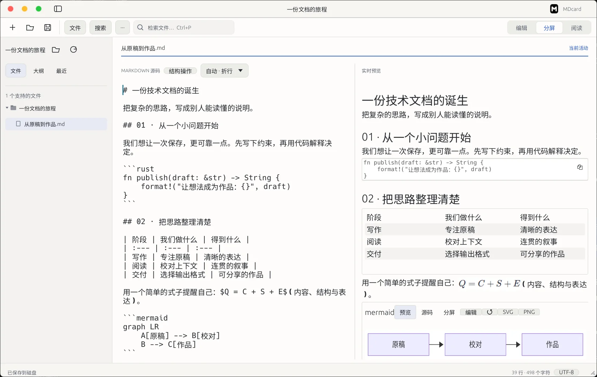
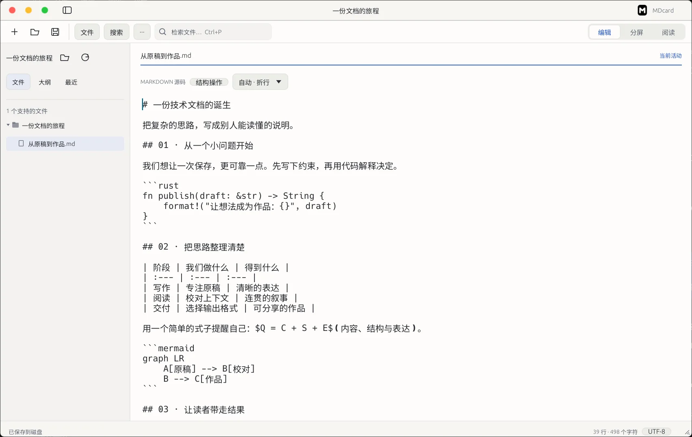
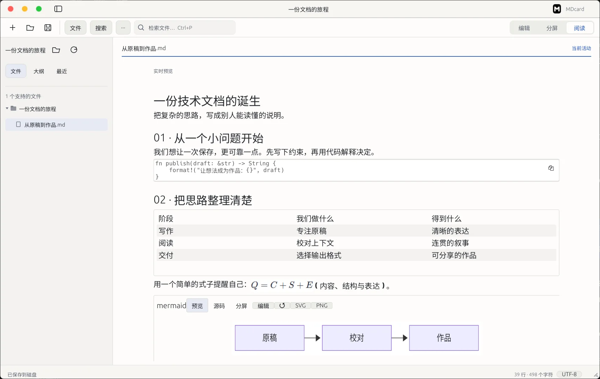
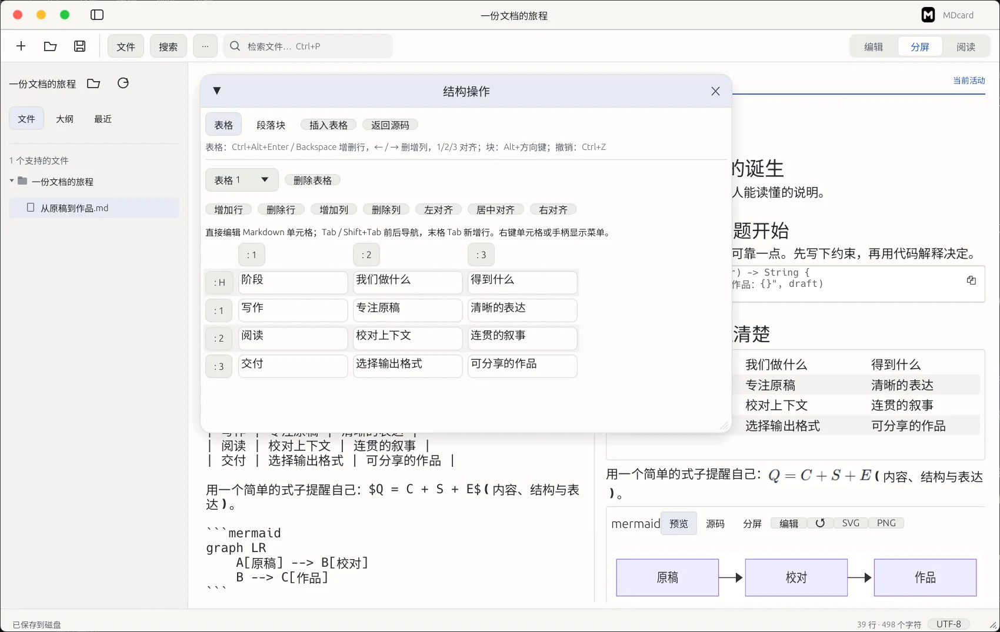
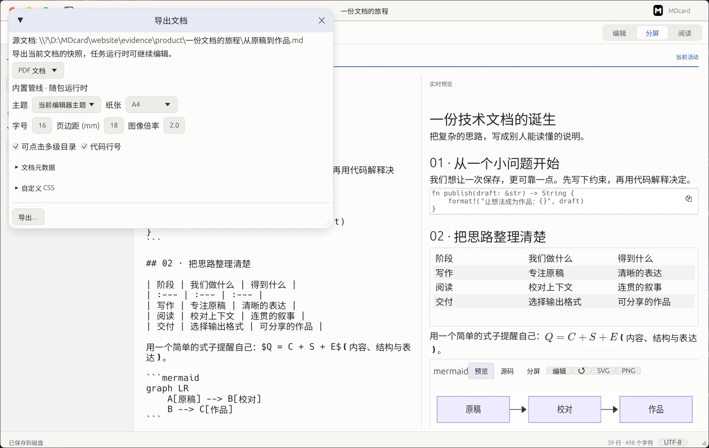

一份技术文档的诞生
把复杂的思路，写成别人能读懂的说明。
完整演示正在载入；关闭 JavaScript 时仍可查看下方真实界面与下载信息。
为中文技术写作者而作
MDcard，一款 Rust 原生 Markdown 与文本桌面编辑器。
从第一行思路，到最后一份 PDF，
让写作、校对与交付，在同一处发生。
本地文件 · 原生界面 · 你的原稿始终是原稿

先看设计，再开始写作
专心写的时候，留下源码。
需要校对时，把结果放在身旁。
只想读一读，就让文字占据整个视野。
切换视图，看看同一份文档的变化。此演示只用于体验视图，不是在线编辑器。
# 一份技术文档的诞生
把复杂的思路，写成别人能读懂的说明。把复杂的思路，写成别人能读懂的说明。
完整演示正在载入；关闭 JavaScript 时仍可查看下方真实界面与下载信息。
使用左右方向键、Home / End 切换；触屏可直接点选。窄屏分屏上下排列。
带走这份示例原稿不是功能清单，是你的工作日常
下面始终是同一份《从原稿到作品.md》。
真实界面、真实原稿，以及可以打开的交付文件。
01 写作 / WRITE
写一份有代码、表格与公式的技术说明。在源码里保留表达，用分屏对照排版，不必反复跳出写作。
这一刻的结果一份能继续编辑的 Markdown 原稿，和正在成形的阅读效果。
文字是主角。
工具在页边就好。

02 阅读 / READ
切到阅读视图，检查段落之间是否连贯。跨文件返回时，分别记住每份文档的最后阅读位置、最远位置与已读状态。
这一刻的结果接回上一段思路；滚到底部不会擅自把文档标成“读完”。
位置恢复有精确、降级与失效边界；文档大幅改写后无法确认的位置会提示降级，不承诺任何修改后都精确命中。

03 整理 / REFINE
调整说明里的表格，查看公式与 Mermaid 流程图；使用结构操作编辑内容，再回到源码检查。搜索则帮你找回需要的那一行。
这一刻的结果结构修改回到原稿里，思路与表现保持联系。公式、图表由随包运行时在本机处理。
查看真实搜索界面
04 交付 / DELIVER
同一份原稿，导出给同事校对的 PDF，或能离线打开的单文件 HTML。也支持 Word、PNG/JPEG、EPUB，以及 Marp 演示文稿导出。
这一刻的结果不是一张效果图，是一份真正可打开、可分享的文件。

关于原稿，我们说清楚
写作、搜索、阅读状态与公式图表处理在本机完成。原稿通过本机管道传给本地渲染进程，不上传到服务。
文档里的 HTTP(S) 图片、点击外部链接可能访问网络。导出遇到远程资源时按具体资源策略处理；“本地处理”不表示所有功能都永不联网。
正常关闭时的未保存提示、原子保存与外部修改检测，帮助保护正常操作。当前没有自动保存或崩溃恢复，请主动保存并做好备份。
Windows 优先，提供 Linux x64 正式包。当前没有已验收的 macOS 版本；Linux 跨发行版与桌面环境的支持以实际验收范围为准。单个打开文件上限 16 MiB。
下一份作品，从这里开始
选择你的平台，核对版本，再带走完整的工作台。
完整包随附本地渲染、导出运行时与字体；包体按实际大小展示。
发布信息按平台独立维护 · 来自正式交付记录与压缩包实测校验 · 更新于 2026-10-24
开始之前
网页演示是为了说明源码、分屏和阅读三种视图的轻量展示，不提供实际编辑、原生文件访问或本地渲染引擎。上方标注“真实产品画面”的截图来自 Windows 正式包，示例 HTML / PDF 来自该包导出引擎。
可以。MDcard 支持 Markdown、普通文本，以及多种常见代码和配置文件。非 Markdown 文件按原文显示，不会把 HTML 或代码当程序执行。文件类型、编码和 16 MiB 单文件上限仍适用。
导出使用对应格式的排版与资源处理。Word、EPUB、图片与幻灯片各有格式边界，不能承诺所有格式逐像素一致。请先用本页原稿与样例确认你的交付需求；Marp 的 HTML / PDF / PPTX 面向演示文稿。
两平台分别完成验收与晋升。当前 Windows 为 Icon Suite R3，Linux 为 R29；版本号相同不代表图标、二进制与验收身份相同。请以各自平台栏的文件名、构建与 SHA256 为准。